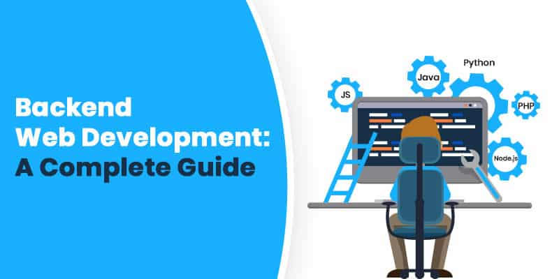
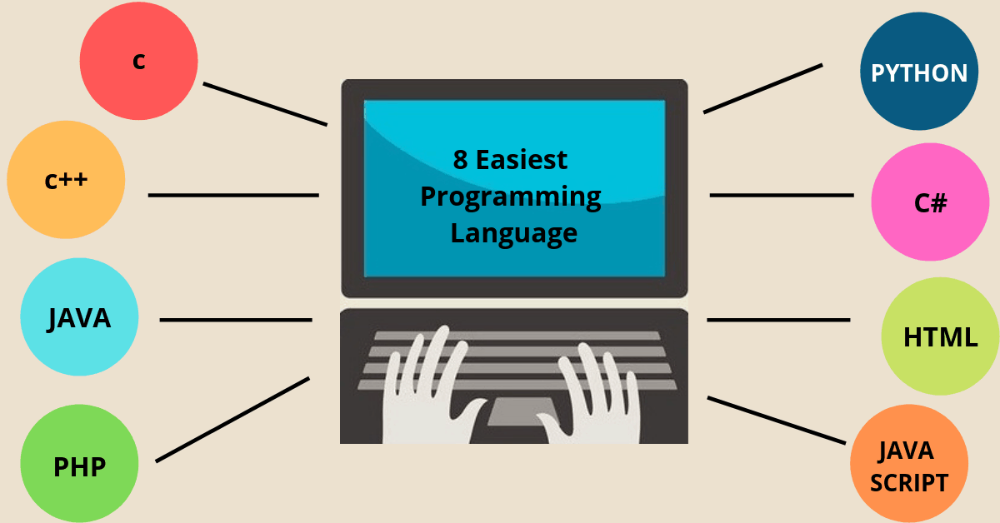

Since its beginnings at the end of the 20th century, the internet has grown exponentially. In the modern world, pretty much everyone has internet access of some form and a huge percentage of people use the internet every single day. Web development is quickly becoming one of the most attractive and best-paid career choices in the modern world. But what is a web developer and what exactly does one do?
You may have thought about learning a programming language or two and becoming a web developer. Luckily for you, we understand that aspiring web developers will have questions about the profession, which is why we have put together this comprehensive guide, which aims to answer the above questions and more.
We will look at the types of web developers, and we will look at the web design vs web development debate. We will also cover some of the most popular programming languages for aspiring web developers, including Python, JavaScript, and HTML.
Contents
- 1. What is the Priority of a Web Developer?
- 2. What Types Of Web Developers Are There?
- 2.1. Front-End Developer
- 2.2. Back-End Developer
- 2.3. Full-Stack Developer
- 3. How To Be A Web Developer
- 4. Web Design vs Web Development
- 5. Popular Languages For Web Development
- 5.1. HTML
- 5.2. CSS
- 5.3. JavaScript
- 5.4. PHP
- 5.5. Java
- 6. On Your Path to a Web Developer
What is the Priority of a Web Developer?
To answer the question “What is a web developer?”, we must first look at what a web developer does and how they do it.
A web developer or programmer is someone who takes a web design - which has been created by either a client or a design team - and turns it into a website. They do this by writing lines and lines of complicated code, using a variety of languages. Web developers have quite a difficult job, because they essentially have to take a language we understand, such as English, and translate it into a language that a computer understands, such as Python or HTML.
As you can imagine, this can take a lot of time and effort and requires an intricate understanding of various programming languages and how they are used. Different types of developers specialize in different areas, which means that large web projects are usually a collaboration between several different developers.
What Types Of Web Developers Are There?
Unfortunately, the question “What does a web developer do?” doesn’t have one simple answer. As noted above, there are some different types of web developers, each of which focuses on a different aspect of the creation of a website.
To understand what is a web developer it is crucial to know that the three main types of developers are front-end, back-end, and full-stack. Front-end developers are responsible for the parts of a website that people see and interact with, back-end developers are responsible for the behind the scenes code that controls how a website loads and runs, and full-stack developers do a bit of everything.
Front-End Developer

A front-end developer is someone who takes a client or design team’s website design and writes the code needed to implement it on the web. A decent front-end web developer will be fluent in at least three programming languages - HTML, CSS, and JavaScript.
HTML allows them to add content to a website while splitting it into headings, paragraphs, and tables. CSS lets a decent developer style the content and change things like colors, sizes, and borders. JavaScript allows the inclusion of interactive elements, such as push buttons. We will go into more detail about these languages later.
So, what do web developers do when they work on the front end of a website?
- What is a web developer responsible for is that they make sure that all of the content that is needed for the website is clear, visible, and found in the right place. In some cases front-end developers may also have content writing skills, allowing them to create the content for the website as they go.
- They make sure that the right colors are in the right places, especially concerning text colors, background colors, and headers. Some of the best front-end developers are also very good designers, allowing them to tweak things as they go.
- They make sure that all outbound links are correctly formatted, that all buttons work properly, and that the website is responsive and attractive. Mobile design is usually a big part of the job, while it is also important to make sure that a website will display correctly on all web browsers.
As you can see, the answer to the question “What is a web developer?” certainly isn’t simple. Even front-end developers have it tough, and this is probably the simplest of the three types of development to learn.
If you want to become a front-end developer, though, head to our article, which can tell you the secrets of becoming an entry level front-end developer.
Back-End Developer
While it may seem like front-end developers have a difficult job making sure that a website looks great, works well, and contains the correct content, back-end developers have it much worse. While front-end developers are responsible for client-side programming, back-end developers have to deal with the server-side.
This means that they have to create the code and programs which power the website’s server, databases, and any applications that it contains. The most important thing as a back-end developer is the ability to be able to create a clean, efficient code that does what you want it to in the quickest way possible. Since website speed is a major consideration when it comes to search engine optimization (SEO), it is a large factor when developing the back-end.
To fully explain what is a web developer it is essential to know that back-end developers use a wide range of different server-side languages to build complicated programs. Some of the most popular languages used include PHP, Python, Java, and Ruby. JavaScript is also becoming increasingly widespread as a back-end development language, while SQL is commonly used to manage and analyze data in website databases.
Since different websites have different needs, a back-end developer must be flexible, able to create different programs, and they absolutely must have a clear, in-depth understanding of the languages that they use. This is very important to make sure that they can come up with the most efficient method of creating the required program while making sure that it is secure, scalable, and easy to maintain.
Full-Stack Developer
If you are looking for a quick, simple answer to the question “What is a web developer?”, then a full-stack developer is probably the closest thing that you’re going to get. Full-stack developers understand both front and back-end strategies and processes, which means that they are perfectly positioned to oversee the entire process.
In the case of small websites that don’t have a huge development budget, a full-stack developer will often be employed to build the entire website. In this case, it is extremely important for them to have a complete, in-depth understanding of both front and back-end development and how they work.
Learning full-stack development techniques has a huge range of benefits, including:
- You will end up with the knowledge to be able to create an entire website on your own. This makes you a lot more employable, increasing your job security in the future.
- As a full-stack developer, you will understand the connections between the front and back-ends of a website, allowing you do build efficient and effective programs for all parts of the website.
- Full-stack developers are often employed to oversee large projects for big web development companies. Positions like this are likely to be paid more than standard web development positions, making them more attractive to developers. Full-stack defines what is a web developer.
Although most developers start with either front or back-end specializations, there are a lot of reasons why you should consider branching out and learning both. It will make you a lot more employable, will give you a greater understanding of the whole concept of what is web development, and will make it easier for you to create entire websites on your own.
How To Be A Web Developer
Now that we have started to answer the question of “What is a web developer?”, it’s time to start looking at how to be a web developer. While a lot of people do their research, decide on programming languages to learn, and have a good go at learning web development, the majority of them fail due to a distinct lack of direction.
If you are serious about building a career for yourself as an experienced web developer, then you need to make sure that you start with a clear vision of how you are going to achieve this. The following steps should help guide you:
- Start by deciding what sort of developer you want to become. The languages and techniques that you learn will depend on whether you want to focus on front or back-end development, to begin with.
- Choose a decent course. Next, you need to choose a course or a couple of courses that will teach you the basics of web development. BitDegree offers many introductory web development courses, including their Interactive Coding for Beginners course, which introduces CSS, HTML, and web development. If the financial situation is tough, be sure to check out BitDegree's micro-scholarship program to help you finance your online classes.
- Create a learning plan. Everyone needs a bit of motivation from time to time, otherwise, we simply don’t do the things that we need to. As you start on your journey towards understanding what is a web developer, you need to start building a bit of a learning schedule. Set aside a certain amount of hours per week for your courses, and make sure that you set yourself realistic goals.
As you can see, it isn’t that hard to become a web developer. Sure, it will take a lot of time, effort, and work, but you can do it if you want. Once you have come to a clear understanding of ‘what is web development’ and ‘what does a web developer do’ it will only get easier.
Web Design vs Web Development
Now, we need to digress for a moment to address an important point that often comes up when people start talking about web development - the web design vs web development debate. Are they different? Are they the same thing?
The answer is no, web design and web development are not the same, but of course, it depends on how you define ‘design’ and ‘development’. For our article, we have assumed that it takes different knowledge to understand what is a web designer and what is a web developer. These professions are different and they have the following roles:
Web Designer:
The web designer is the person or group of people who are responsible for the creation of the website concept. They might decide that it needs to be a certain color, with certain content and pages. They may do things like creating infographics, logos, and videos, and they tell the developer where these things have to be put on the web page. However, they don’t take part in the construction of the website or the underlying code.
Web Developer:
The web developer takes the designer’s concepts and creates the code that is used to turn them into a website and bring them to people like you and me. It is important to realize that, although the web developer and the designer may be the same person - there is almost always some overlap between design and front-end development - the roles are different.
If you want to be a designer, you won’t necessarily have to learn any code at all. Likewise, a developer doesn’t need to have any graphic design skills at all. From this, it follows that ‘designing a website’ is not part of the answer to ‘What is a web developer?’.
Popular Languages For Web Development
Now, it is very important to realize that there is a range of different languages that are used for web development. As noted above, front and back-end developers will need to learn different languages, while full-stack developers will need a working knowledge of all the major web development languages.
With this in mind, we have put together a list of some of the most common languages for web developers to learn, along with an explanation of what they are used for and how you can learn them.
HTML
HTML is an essential language if you want to understand what is a web developer and how to become a front-end one. To explain it fully, I need you to do something for me:
Right-click on your browser window, and select ‘view page source’.
You should be taken to a new tab containing all of the information which goes into the creation of this webpage. What you are seeing is mainly HTML code. It tells the website what content to display and to some extent, how to display it. At the top of the page, on the first line, you will see the <!DOCTYPE html> command. This tells your web browser to expect HTML code.
If you explore further, you will start to recognize things on the page. You will see some commands that you understand, such as ‘link’, ‘image’, or ‘video’. These are all content commands which tell your browser what to show, where to get the content from, and how to show it.
HTML is a very easy language to learn, and it is usually the first one learned by new programmers. If you are interested in exploring HTML, having a deeper look at what is a web developer, and front-end web development, consider enrolling in the HTML Coding for Beginners Course or the Comprehensive HTML5 Tutorial.
CSS
CSS is the second of the essential front-end languages and is also one which every front-end developer must be fluent in. The CSS code is used in conjunction with HTML. While HTML tells the webpage what content to display, CSS tells the webpage how to display the content - it’s a ‘styling’ language.
Once you have learned CSS, you will be able to do a wide range of things, including:
- Changing colors. CSS allows you to change the color of pretty much everything from your paragraph text to your background to your table borders.
- Changing fonts. CSS also lets you choose the fonts that you are going to use on your website and where you are going to use them.
- Positioning elements. One of the key elements of what is a web developer capable to do is arranging everything you see in the website. HTML lets you add images and videos to your webpage, but CSS lets you tell the browser how big to make them and where to display them.
- Changing text size. Are you building a website designed for people with poor eyesight? If so, you will need to use your knowledge of CSS coding to make your text larger.
As you can see, CSS plays a big role in web development, especially to front-end developers.
If you would like to learn CSS, try the CSS Coding for Beginners course, which will teach you the basics of CSS in under an hour. Alternatively, try Interactive Coding for Beginners, which will give you an insight into the basics of HTML, CSS, and responsive web development.
JavaScript
What do web developers do? Well, most web developers take a programming language like Java or HTML and use it to create a component of a website. JavaScript developers are no different, except they create very specific content. So, for JavaScript, what is a web developer exactly?
Most JavaScript developers work on the front-end of a website. They build small snippets of JavaScript code that make your website responsive, interactive, and attractive to your visitors. These JavaScript snippets are often embedded in the HTML source code for a website.
Although it has traditionally been a front-end language, and one which is vital for any front-end developer to learn, JavaScript is becoming increasingly popular for back-end development as well. A lot of front-end developers are beginning to find work as full-stack developers due to their knowledge of JavaScript, which means that its usage and popularity is skyrocketing.
BitDegree offers two separate JavaScript tutorials. The first, A Video JavaScript Tutorial, will teach you the basics of the language and how it is used in just over an hour of video lectures. The second, the Interactive JavaScript Tutorial, will go into more depth about JavaScript uses, syntax, and functions.
PHP
Historically, PHP has dominated definitions of what is a web developer. Known as the language of the internet, it is currently used in some form on over 80% of websites in existence. Although it is slowly decreasing in popularity, PHP is still a great language for any back-end web developer to learn.
PHP is very easy to learn and is quite easy to use, which makes it very popular for beginner back-end developers. It is very popular on small websites built on platforms like WordPress or Wix, and there are plenty of freelance work opportunities for PHP developers.
If this sparks your interest, consider taking an online PHP course. Note that it is very important to take an up to date course, like those offered by BitDegree, as older versions of the language are quite different from the modern version (PHP7).
BitDegree offers various PHP courses: starting from the Learn PHP Online tutorial going all the way to practical PHP & MySQL course that will give you 5 projects to complete. Take a look at both of these (and others) and choose the one which you think is most relevant to your desired career path.
Java
The last of the languages on our list, Java, has been a major part of what is a web developer for years. It is an old language and is popular for a variety of different programming uses. From a web development sense, Java is used to create responsive, scalable web apps that are used for responsive, fast website design.
Java is an essential language for many back-end developers. It is quite easy to learn, which makes it beginner-friendly, and it is very easy to use. It is super scalable, which makes it popular among larger websites like eBay and Amazon, and it is very easy to maintain.
If you would like to have a go at learning Java, have a look at the interactive Java course. This course will teach you the basics of how to code with Java, what Java is used for, and how to build server-side (back-end) programs.